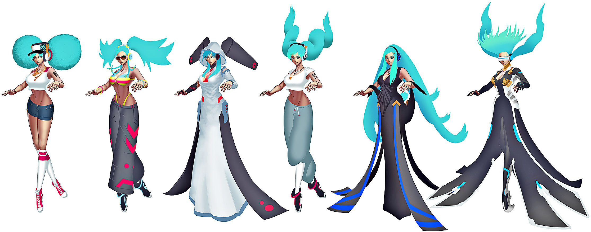
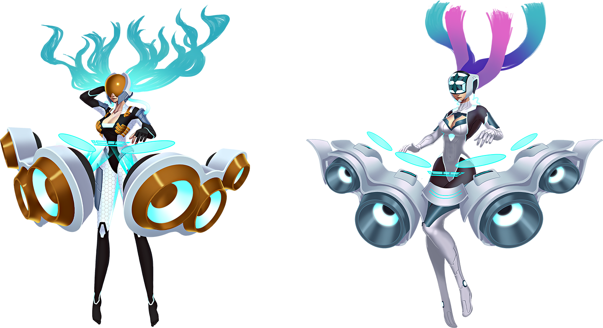
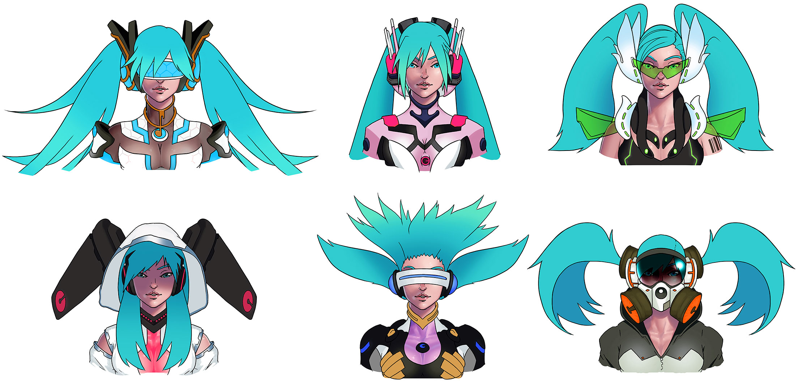
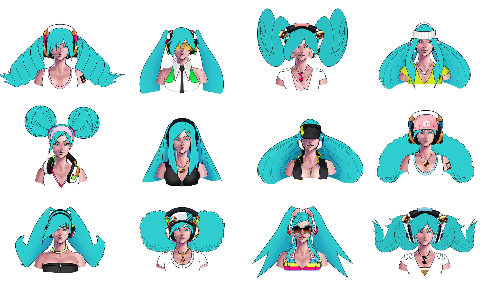
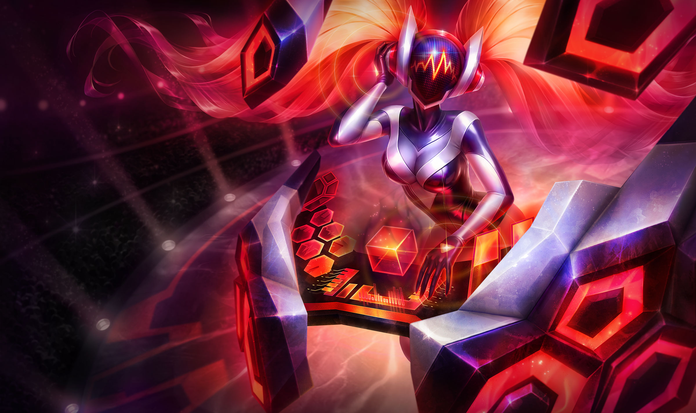
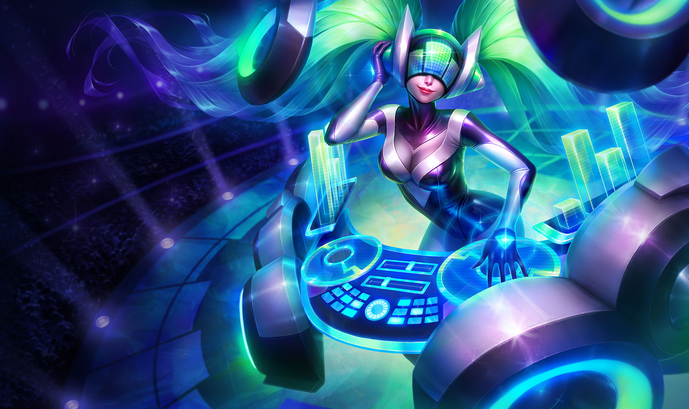

辅助
2010
娑娜
琴瑟仙女
早在我们开始着手设计DJ娑娜这个传说级皮肤之前，
玩家们便想象过娑娜戴着耳机打碟的DJ形象了。给古
风气质的琴瑟仙女赋予十足的现代感，听起来就是一
个美妙的演化方向。但是，为了她的外观和声效的具
体呈现，我们展开了激烈的讨论。
“最开始，我们 想的是她能在不同的音乐风格之
间切换，比如hip-hop，韩式流行音乐，或许再
加上爵士等等。”
PAUL HOENER
艺术家
今天我们演奏哪首曲子?
我们很快发现，如果我们不能确定一个统一的主题，
这个皮肤就会变成一堆含混不清的音乐大杂烩。概念
画师Paul Kwon开始四处展示他为DJ 娑娜所画的草
图，画面里的琴瑟仙女仿佛是Daft Punk的化身，引
来了其他Rioter纷纷加入到这个计划中。因为经过多
年的发展，电子音乐已经成为了包含多种风格的庞大
音乐流派，包括电子舞曲（EDM）、浩室舞曲
（House）和回响贝斯（Dubstep）等等。所以这样
同时仍然保持主题的一致性。
我们想用不同的形状来配合不同的音乐风格。“空
灵”曲风搭配的是比较轻松的圆形和环形，而“动
感”则是成堆的正方形。
“方形象征着力量和活力。而在‘震荡’曲目
里，我们选择了尖锐的三角形。人们会本能地感
觉到三角的激进感觉。视觉效果烘托了音乐，反
之亦然。”
PAUL HOEFNER
艺术家
一些特定的皮肤，例如DJ 娑娜，与英雄的基础形象差
别很大，所以艺术家们必须很小心，以保证这些英雄
的新形象仍然有很高的辨识度。首席概念画师Larry
Ray觉得窍门在于强调甚至放大英雄身上最标志性的
特征。娑娜轻盈流动的双马尾便是让她脱颖众人的特
征之一，所以DJ 娑娜头盔上曼妙的卷曲光影就是她不
忘初心的证明。
仙音成律。
我们能解决这个不和谐的音调么？
 |  |  |
|---|